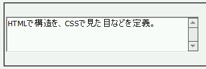

入力ボックス系の要素（input, textarea）にフォントファミリを指定する際、欧文フォントと和文フォントの両方を指定したにもかかわらず、すべて欧文フォントで表示されてしまう。結果として、文字化けして表示される。
<form method="post" action="#"> <textarea name="txt" cols="50" rows="3" style="font-family:Tahoma,Osaka−等幅,sans-serif;"> HTMLで構造を、CSSで見た目などを定義。</textarea> </form>
1バイト文字をTahoma、2バイト文字をOsaka−等幅、これらのフォントが存在しない場合はサンセリフで表示させています。
WinIE6.0での表示（標準モード）